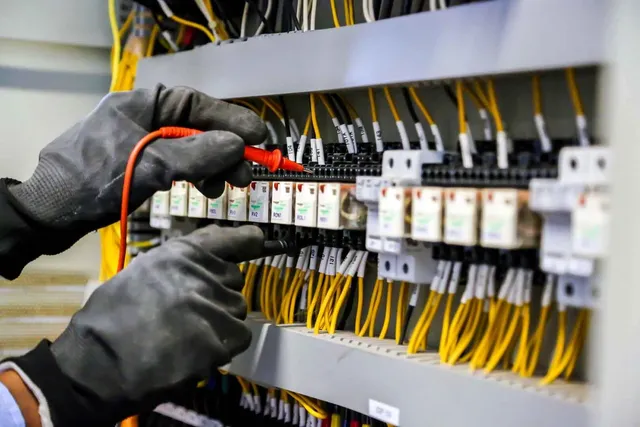

Intervention rapide à Basse-Goulaine pour tout type de panne électrique : coupures, courts-circuits, dysfonctionnements du réseau. Remplacement de composants essentiels comme disjoncteurs, interrupteurs, fusibles. Nos électriciens expérimentés établissent un diagnostic précis pour garantir une réparation durable et sécurisée, conforme aux normes en vigueur.
LES SERVICES
Installation et mise aux normes

Réalisation complète d'installations électriques à Basse-Goulaine, mise en conformité selon les normes de sécurité en vigueur, et installation de tableaux électriques modernes.
Dépannage et réparation
Interventions rapides à Basse-Goulaine pour résoudre les pannes électriques, les courts-circuits, et remplacer les composants défectueux.
Rénovation Électrique

Modernisation des installations électriques à Basse-Goulaine : travaux de rénovation partielle ou complète avec mise aux normes et équipements sécurisés.
Éclairage et chauffage

Installation et maintenance de systèmes d’éclairage intérieur et extérieur, ainsi que de chauffage électrique à Basse-Goulaine, incluant planchers chauffants et chauffe-eaux.
Entretien préventif

Service de maintenance régulière à Basse-Goulaine pour assurer la fiabilité des installations électriques et prévenir les pannes éventuelles.
À Basse-Goulaine, nous réalisons l'installation complète de systèmes électriques, incluant le câblage, les prises et les dispositifs de protection pour garantir un réseau fiable et durable. Nous assurons également la mise en conformité avec les normes de sécurité actuelles, minimisant les risques électriques. Pose de tableaux électriques modernes pour une gestion optimale de la distribution électrique. Chaque installation à Basse-Goulaine bénéficie aussi d’un diagnostic complet afin de répondre aux exigences de performance et de sécurité.
Nous intervenons à Basse-Goulaine pour l’installation et l’entretien de systèmes d’éclairage (intérieur et extérieur), adaptés à chaque espace résidentiel ou professionnel. Nous proposons des solutions économiques et modernes, avec gestion intelligente de l’éclairage. Nous installons également des systèmes de chauffage électrique performants, incluant planchers chauffants et chauffe-eaux pour un confort optimal dans vos locaux à Basse-Goulaine.
À Basse-Goulaine, nous assurons une maintenance régulière de vos installations électriques. Nos techniciens inspectent chaque composant pour prévenir les pannes et optimiser la durée de vie de votre réseau électrique. Ce service préventif garantit sécurité, performance et tranquillité d’esprit.
Nous prenons en charge vos projets de rénovation électrique à Basse-Goulaine, qu’il s’agisse d’un logement ancien ou d’un local professionnel. Nos services incluent la mise aux normes, le remplacement de tableaux, la modernisation du câblage et l’ajout de points lumineux. Conformes à la norme NF C 15-100, nos interventions assurent une installation fiable et sécurisée, parfaitement adaptée à vos besoins.
NOTRE SAVOIR-FAIRE À BASSE-GOULAINE
Chez Lassistance Electricien, notre équipe d’électriciens qualifiés à Basse-Goulaine met son expertise au service de votre sécurité et de votre confort. Nous utilisons des équipements modernes pour assurer des installations fiables, esthétiques et conformes aux normes. Installation complète, mise en conformité ou maintenance : chaque intervention est réalisée avec précision et professionnalisme. Faites confiance à notre savoir-faire local pour des solutions électriques durables, performantes et parfaitement adaptées à votre habitat ou local professionnel à Basse-Goulaine.
NOS TARIFS
TRANSPARENTS ET COMPÉTITIFS
À Basse-Goulaine, Lassistance Electricien vous propose des services de qualité en installation et maintenance électrique à des prix compétitifs. Nos solutions s’adaptent à vos besoins et à votre budget, avec un excellent rapport qualité/prix et la garantie d’un travail soigné.
DEVIS GRATUITPOURQUOI CHOISIR LASSISTANCE ELECTRICIEN À BASSE-GOULAINE ?
Faire appel à Lassistance Electricien, c’est choisir un partenaire local de confiance, implanté à Basse-Goulaine (44). Nous comprenons les spécificités du secteur et adaptons nos services pour chaque client : mise en conformité, installation de chauffage électrique, solutions domotiques, etc. Grâce à notre expertise, notre réactivité, et l’utilisation de matériel de qualité, nous vous accompagnons de manière personnalisée pour des installations sécurisées, fiables et esthétiques.
DES SERVICES ÉLECTRIQUES PROFESSIONNELS À BASSE-GOULAINE
Solutions sur mesure :
Nous proposons à Basse-Goulaine des prestations personnalisées pour répondre à tous vos besoins en électricité, que ce soit en installation, mise aux normes ou entretien régulier.
Qualité des matériaux :
Nos équipements sont soigneusement sélectionnés pour garantir la durabilité, la sécurité et la performance de vos installations.
Maîtrise de l’efficacité énergétique :
Nous concevons des systèmes qui optimisent votre consommation d’énergie et réduisent vos factures tout en préservant l’environnement.
VOTRE INSTALLATEUR ÉLECTRICIEN À BASSE-GOULAINE
Avec Lassistance Electricien, vos projets électriques à Basse-Goulaine deviennent simples et efficaces. De l’étude à la mise en conformité, en passant par la maintenance, nous prenons tout en charge. Notre équipe vous accompagne à chaque étape avec rigueur et réactivité. Grâce à nos interventions de qualité, vous bénéficiez d’un système électrique sûr, performant et conforme, pour un quotidien sans tracas.